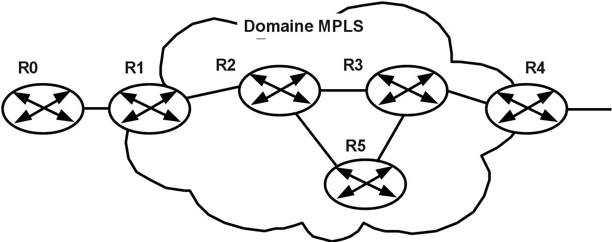

Projet n°12 : Domaine MPLS sur GNS3
Contexte :
TP de réseaux opérateurs en BUT R&T, sur des routeurs Cisco 7200 émulés dans GNS3.
Objectif :
Mettre en œuvre un domaine MPLS, la technologie utilisée par les opérateurs pour acheminer le trafic de leurs clients.

Topologie du TP : R1 et R4 en bordure du domaine MPLS, R2, R3 et R5 au cœur
Travaux :
- Construction de la topologie de 6 routeurs dans GNS3
- Configuration et test du routage OSPF
- Activation de MPLS : R1 et R4 en routeurs d'entrée et de sortie (LER), R2, R3 et R5 en routeurs de cœur (LSR)
- Mise en place de tunnels MPLS Traffic Engineering
Outils et technologies :